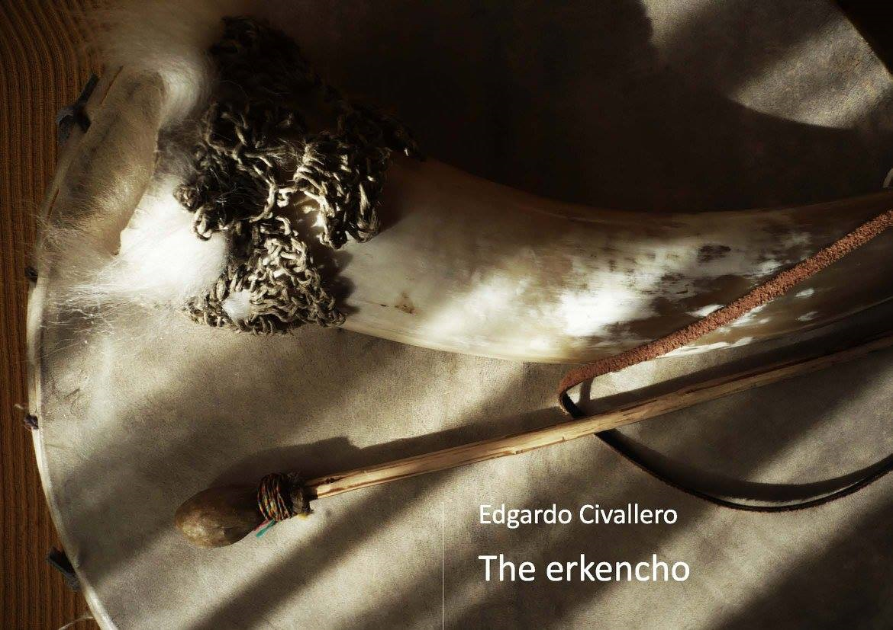
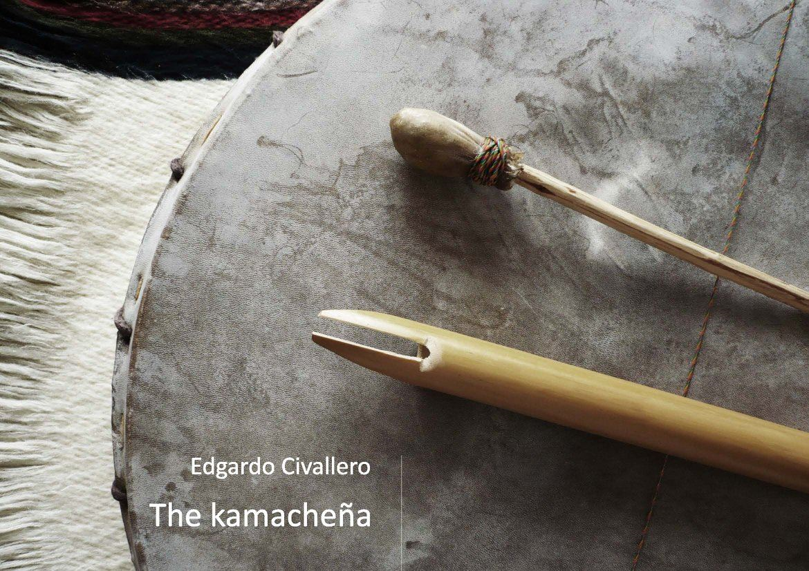
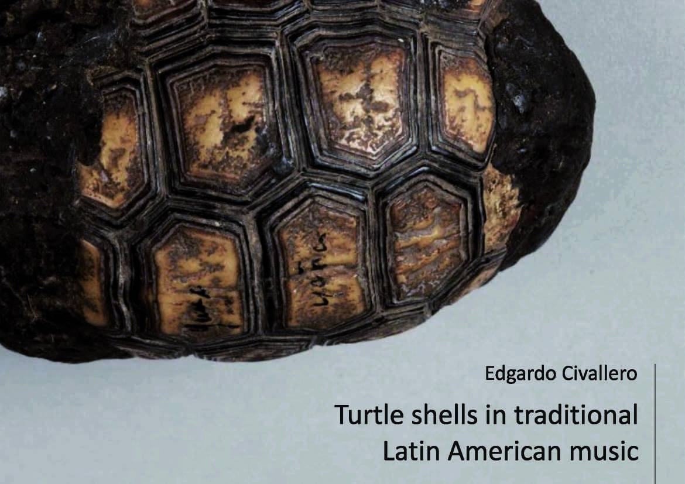
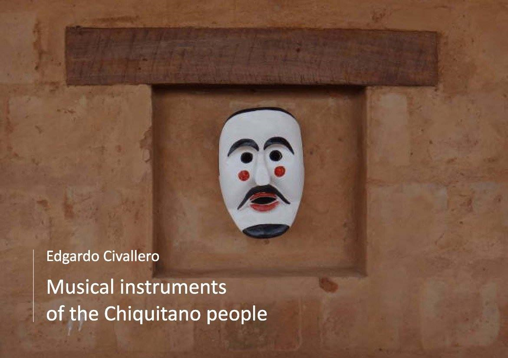

Digital books on music
Home > Publications > Digital books on music
The books offered here for download as digital-only publications are original researches on organology and ethnomusicology. Texts are distributed under a Creative Commons license by-nc-nd 4.0.
01. Yanawan yuraqwan. Andean musical instruments in black and white
Photo album with 15 black and white images accompanied by brief descriptions, introducing some of the most interesting traditional Andean musical instruments: quenas, pusi p'ias, sikus, toyos, rondadores, ocarinas, charangos, pingullos, pinkillos, waka pinkillos, waylla qhepas and wank'aras.
[Download].

02. The erkencho
A brief guide introducing the reader to the structure, context and use of a particular idioglottal clarinet (erkencho, erquencho, erke, erque, irqi) played in southern Bolivia and northwestern Argentina, composed of a bell and a small reed body with a single vibrating tongue, and which retains in its notes an ancient, traditional Andean repertoire with pre-Hispanic roots, always accompanied by the drum called caja.
[Download].

03. The kamacheña
A brief guide introducing the reader to the location, structure and use of a little-known Andean aerophone (quenilla, flauta de Pascua, flautilla, quena, flautilla jujeña) performed in southern Bolivia (department of Tarija) and northwestern Argentina (provinces of Salta and Jujuy): a flute played with one hand alongside the vibrant accompaniment of the drum caja, which is used for keeping alive very ancient repertoires.
[Download].

04. Turtle shells in traditional Latin American music
A short introduction to a world of shaken and rubbed shells, from the forests of southern Chaco to the mountains of Central Mexico, including the Amazonia, the Orinoquia, the Caribbean coasts, and covering a wide range of cultures and music.
[Download from Acta Académica]

05. Musical instruments of the Chiquitano people
A brief guide to the flutes and drums of a society native to the Bolivian lowlands: the Chiquitano. Known for being the heirs of the Jesuits' Baroque musical tradition, they also maintain a music of their own, still performed by small ensembles in each village.
[Download from Acta Académica]